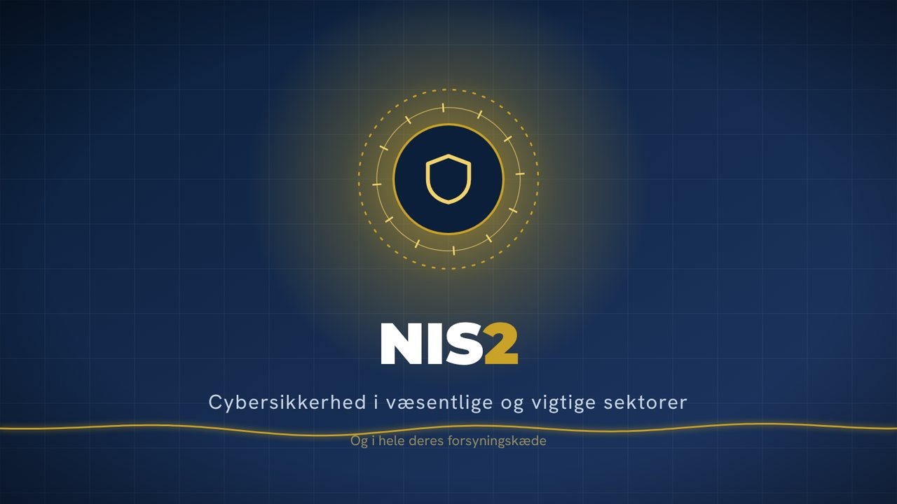

ARG
ARGARGOS › Reglerne på 4 minutter › NIS2
NIS2 på 4 minutter: Danmark: NIS2 er allerede lov
NIS2 er det europæiske cybersikkerhedsdirektiv for væsentlige sektorer og deres forsyningskæde. At vente beskytter ikke. Hele kæden hæfter. I Danmark er NIS2 allerede lov.

- 0:01Angrebet
- 0:11Bøderne
- 0:27I Danmark
- 0:43NIS2
- 0:53Fire trin
- 1:09Ti foranstaltninger
- 1:24Datoer
- 1:40Europa
- 2:01Myndighederne
- 2:14Hvad gør man
Det vigtigste
- 10 mio. € eller 2 % af omsætningen · væsentlige enheder
- 6.5.2025 cybersikkerhedsloven vedtages
- 1.7.2025 loven træder i kraft
- Derefter registrering på virk.dk
- I dag vejledninger og NIS2-tjek
- Lov nr. 434 I kraft siden 1. juli 2025
- SAMSIK Koordinerer
- Sektortilsyn Hver sektor sin myndighed
Transskription
Den fulde speaktekst
0:01 · Angrebet
Mandag, klokken seks om morgenen. Systemerne starter ikke. Filerne er krypteret. Leverandøren svarer ikke. Hvem underretter hvem, og hvor hurtigt?
0:11 · Bøderne
NIS2-direktivet giver bøder op til ti millioner euro eller to procent af omsætningen for væsentlige enheder. Og det kræver, at hændelser anmeldes i tre trin: 24 timer, 72 timer og en måned. Ledelsen godkender foranstaltningerne og hæfter for dem.
0:27 · I Danmark
I Danmark er NIS2 allerede lov. Cybersikkerhedsloven trådte i kraft 1. juli 2025. Styrelsen for Samfundssikkerhed koordinerer. Tilsynet ligger hos sektormyndighederne. Omkring 6.000 enheder er omfattet. Og registreringsfristen er overskredet.
0:43 · NIS2
NIS2 er det europæiske cybersikkerhedsdirektiv for væsentlige sektorer og deres forsyningskæde. At vente beskytter ikke. Hele kæden hæfter.
0:53 · Fire trin
Hvad det kræver, i fire trin. Afklar, om man er væsentlig eller vigtig. Registrér sig på virk punktum d k. Gennemfør de ti foranstaltninger, godkendt af ledelsen. Og anmeld væsentlige hændelser til tiden. Leverandørsikkerhed er en af de ti foranstaltninger.
1:09 · Ti foranstaltninger
Af de ti foranstaltninger gør fire forskellen. Risikoanalyse og sikkerhedspolitikker. Hændelseshåndtering og driftskontinuitet. Sikkerhed i forsyningskæden. Og multifaktorgodkendelse og kryptering. Artikel 21 i direktivet.
1:24 · Datoer
De danske datoer. 6. maj 2025: cybersikkerhedsloven vedtages. 1. juli 2025: den træder i kraft. Derefter: registrering på virk punktum d k. Og i dag: vejledninger fra myndighederne og et NIS2-tjek.
1:40 · Europa
I Europa er NIS2 allerede lov i mange lande. Tyskland: 29.500 enheder, ledelsen hæfter. Italien: basisforanstaltninger kræves. Belgien: CyberFundamentals. Portugal: ledere hæfter. Nederlandene: uden overgang. Danmark: tilsyn pr. sektor. Frankrig og Spanien er stadig uden lov.
2:01 · Myndighederne
I Danmark koordinerer Styrelsen for Samfundssikkerhed. Sektormyndighederne fører tilsyn i hver sektor. Registrering og anmeldelser sker på virk punktum d k. Og den, der leverer til danske kunder, får NIS2 via kontrakten.
2:14 · Hvad gør man
Hvad gør man nu. Afklar omfanget, registrér, gennemfør foranstaltningerne, forbered anmeldelser og forpligt leverandørerne. ARGOS tjekker det løbende, med sonder på de rigtige systemer og bevis til revisor og kunde. NIS2: cybersikkerhed skal bevises.
Ofte stillede spørgsmål
Hvad er NIS2?
NIS2 er det europæiske cybersikkerhedsdirektiv for væsentlige sektorer og deres forsyningskæde. At vente beskytter ikke. Hele kæden hæfter. NIS2-direktivet giver bøder op til ti millioner euro eller to procent af omsætningen for væsentlige enheder. Og det kræver, at hændelser anmeldes i tre trin: 24 timer, 72 timer og en måned. Ledelsen godkender foranstaltningerne og hæfter for dem.
Hvad kræver NIS2?
Hvad det kræver, i fire trin. Afklar, om man er væsentlig eller vigtig. Registrér sig på virk punktum d k. Gennemfør de ti foranstaltninger, godkendt af ledelsen. Og anmeld væsentlige hændelser til tiden. Leverandørsikkerhed er en af de ti foranstaltninger.
Hvilke datoer er vigtige?
De danske datoer. 6. maj 2025: cybersikkerhedsloven vedtages. 1. juli 2025: den træder i kraft. Derefter: registrering på virk punktum d k. Og i dag: vejledninger fra myndighederne og et NIS2-tjek.
Hvad gælder i Danmark?
I Danmark er NIS2 allerede lov. Cybersikkerhedsloven trådte i kraft 1. juli 2025. Styrelsen for Samfundssikkerhed koordinerer. Tilsynet ligger hos sektormyndighederne. Omkring 6.000 enheder er omfattet. Og registreringsfristen er overskredet. I Danmark koordinerer Styrelsen for Samfundssikkerhed. Sektormyndighederne fører tilsyn i hver sektor. Registrering og anmeldelser sker på virk punktum d k. Og den, der leverer til danske kunder, får NIS2 via kontrakten.
Hvad bør en virksomhed gøre nu?
Hvad gør man nu. Afklar omfanget, registrér, gennemfør foranstaltningerne, forbered anmeldelser og forpligt leverandørerne. ARGOS tjekker det løbende, med sonder på de rigtige systemer og bevis til revisor og kunde. NIS2: cybersikkerhed skal bevises.
Officielle kilder
- Direktiv (EU) 2022/2555 (NIS2) (EUR-Lex)
- Gennemførelsesforordning (EU) 2024/2690 (EUR-Lex)
- Styrelsen for Samfundssikkerhed
- Software in a Box’ regulatoriske faktaark
Se også
 Data Act og DGA
Data Act og DGAData Act og DGA på 4 minutter: Danmark: tilsyn hos myndigheden, bøder ved domstolene
 ISO for staten
ISO for statenISO for staten på 4 minutter: Bevis er ikke en formular
 GDPR
GDPRGDPR på 4 minutter: Der gives oftest bøder for det grundlæggende
Speak og musik er genereret med kunstig intelligens (art. 50 i AI-forordningen). Generel information, ikke juridisk rådgivning; status november 2026, ifølge Software in a Box’ regulatoriske faktaark. Videoklip under licens fra Envato.
Sådan indlejrer du præsentationen på en anden hjemmeside: <iframe src="https://argos.softwareinabox.eu/da/regler/nis2/presentacion/?embed=1" width="960" height="540" allow="autoplay; fullscreen" title="NIS2 på 4 minutter: Danmark: NIS2 er allerede lov"></iframe> med et link til denne side.
Findes også på: EspañolDeutschFrançaisFrançais (Belgique)ItalianoNederlandsNederlands (België)Português